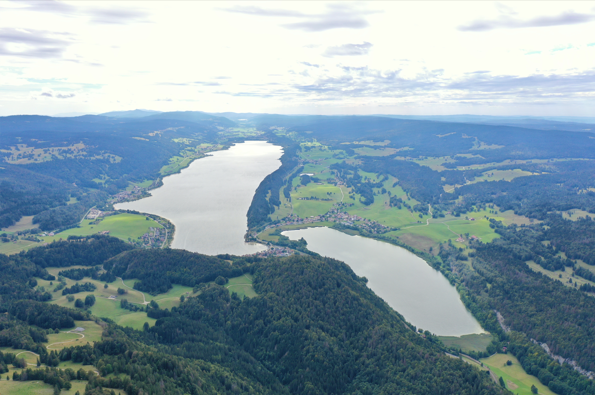
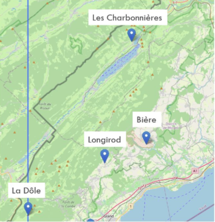
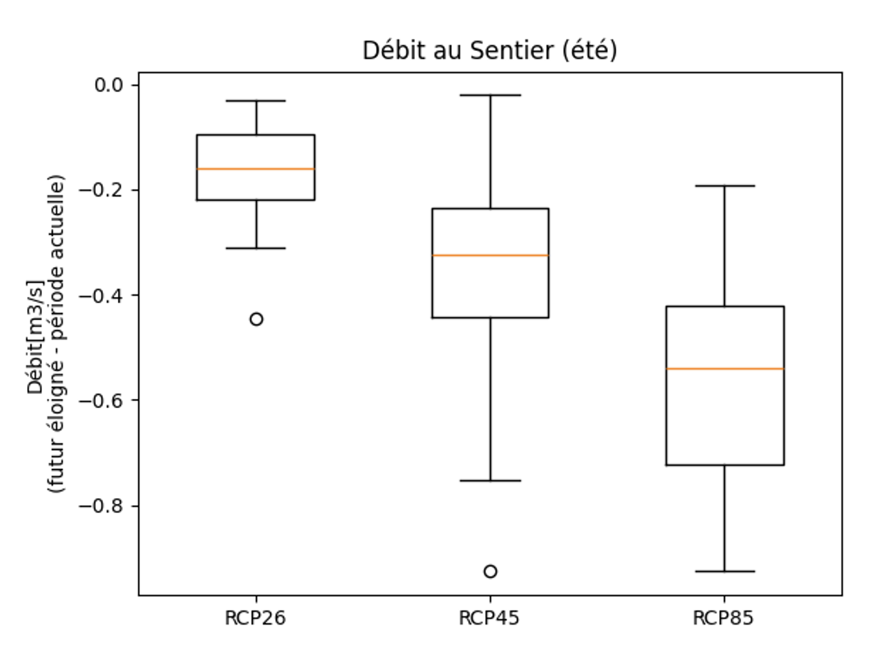

STORE
Informations projet
Durée 01.2024-07.2027, 42 mois
Partenaires STREAM / HES-SO Valais-Wallis, Romande Energie, Collaboration HydroAlps Lab
Financement Flagship Innosuisse (convention de subvention n° 108.230)
STORE — Modélisation des ressources en amont de la centrale de La Dernier


Figure 1 : Lac de Joux et de Brenet (crédit : Wikipédia, Jérémy Toma). A droite, les stations météorologiques utilisées pour la modélisation hydrologique
Contexte et objectifs
STORE est un grand projet Flagship Innosuisse coordonné par la HES-SO Valais-Wallis, réunissant 13 partenaires industriels et 4 partenaires académiques pour concevoir l’infrastructure de stockage énergétique nécessaire à une production 100 % renouvelable en Suisse. Le WP1 Hydroélectricité explore la flexibilité et les capacités de stockage de l’hydroélectricité. La contribution de STREAM porte sur le Cas Test 1 et la centrale de La Dernier (Romande Energie) qui s’intéresse à l’utilisation de batterie pour concilier contraintes d’éclusées et production.
Dans ce cadre, STREAM apporte l’expertise hydrologique : modéliser les lacs de Joux et de Brenet (en amont de la centrale, voir Figure 1) pour estimer l’évolution de la ressource turbinable sous changement climatique, incluant les sécheresses et les crues, et son impact sur la production.
Résultats
Modélisation hydrologique avec RS MINERVE
Le bassin du lac de Joux a été modélisé avec le logiciel RS MINERVE. Les deux lacs ont été modélisés comme un réservoir unique. Le périmètre a été découpé en quatre bassins versants et en bandes d’altitude de 200 m pour mieux représenter la fonte nivale.
La calibration horaire (2015–2020, validée sur 2021–2022 puis testée jusqu’en 2024) donne de bons résultats : coefficient de Nash de 0,68 à la Frontière et 0,72 au Sentier.
Projection des ressources
La production historique annuelle se révèle fortement corrélée à la pluie annuelle (81 %) et au débit de l’Orbe au Sentier (94 %), ce qui permet d’estimer grossièrement la production future à partir des débits projetés.
Alimenté par les scénarios climatiques CH2018, le modèle indique une légère hausse des précipitations annuelles mais une baisse de la ressource estivale, attribuée à l’augmentation de l’évapotranspiration : au Sentier, le scénario le plus pessimiste (RCP 8.5) prévoit une diminution moyenne de 0,5 m³/s en été à l’horizon fin de siècle (2070–2099) (Voir Figure 2).

Figure 2 Evolution des débits moyens (saison : été) au Sentier de 1981-2012 à 2070-2099, selon les trois scénarios
Nous sommes actuellement en train de mettre à jour les modélisations pour mieux prendre en compte les infiltrations de ce milieu karstique créant une rivière souterraine avec une résurgence en aval du lac de Brenet. Nous espérons que le modèle hydrologique du lac permet de donner de meilleurs résultats pour pouvoir tester ensuite différents scénarios de fonctionnement de la centrale.
Evolution des crues
Des méthodes IA génératives (GAN) ont été développées pour générer des données climatiques horaires aux stations d’intérêt, à partir de données disponibles uniquement à l'échelle journalière (voir Projet Génération stochastique de séries météorologiques horaires). Ces données horaires, associées au modèle hydrologique décrit ci-dessus reproduisent les hauts débits de l’Orbe au Sentier mieux que les autres méthodes (interpolation linéaire ou tirage aléatoire), avec une plus faible distance de Wasserstein sur les débits (0,020 m³/s). Ces travaux vont permettre une meilleure estimation de l’évolution des crues dans le futur.
Qui a participé ?
STREAM / HES-SO Valais-Wallis (F. Terrettaz, F. Mettra, E. Neveu)
Romande Energie
Collaboration HydroAlps Lab (HAL)
Flagship Innosuisse (convention de subvention n° 108.230)
Valorisation
Congrès Eau & IA, Proceedings (mars 2026, https://neveue.github.io/pdf/Congres_Eau_IA_2026_crues.pdf)